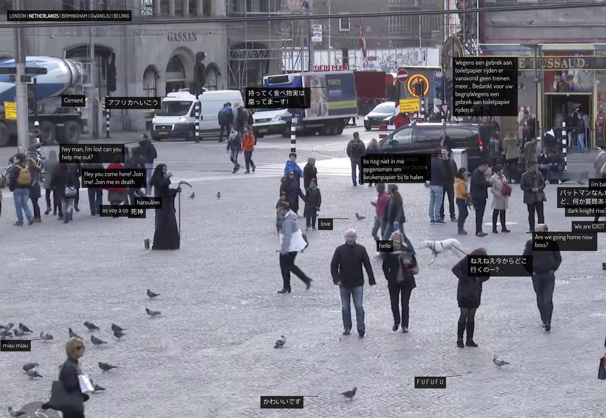

I found it hard to stay concentrated throughout the entire video especially because I was failing to understand most of what was being said. I resorted to taking breaks in between the videos in order for me to grasp the information I will have to go over the videos several times again because a lot was said.
When it comes to net web art nothing about it fascinates me at all, I understand that it is an art that is solely based on and functions through the web and is nothing like traditional art that can be uploaded onto the web but does not rely on it. But I fail to see its purpose or even the beauty in it. But what I did find interesting was Kyle McDonald’s Exhausting a Crowd
the interactivity that comes along with it is what’s interesting the fact that the user can interact with the work is what I liked about it and there is beauty in the recordings of everyday life, and it is somewhat very immersive to just watch. Nothing else was as fascinating to me I thought I would see more arts that are aesthetically pleasing but none of them were appealing to look at or piqued my interest much. I hated how some of the artworks incorporated a lot of writing.
Maybe I lack the sense of understanding of what the purpose of net web art is and therefore I don’t see the beauty in it or if there is any purpose to it at all. I particularly enjoyed the Danae reading which gave a broader explanation of net web art I started to understand more what is being referred to using the term “net web art”. The readings were easy to read and understand which is what I resonate with most about them.
In the reading Park Design Principles for Interactive user experience through net art I resonated most with the section that talked about "collaborative participation" which is what interests me the most when it comes to net art the idea of having the user actively participate in the artwork and blur the lines between artists/creator and the user.